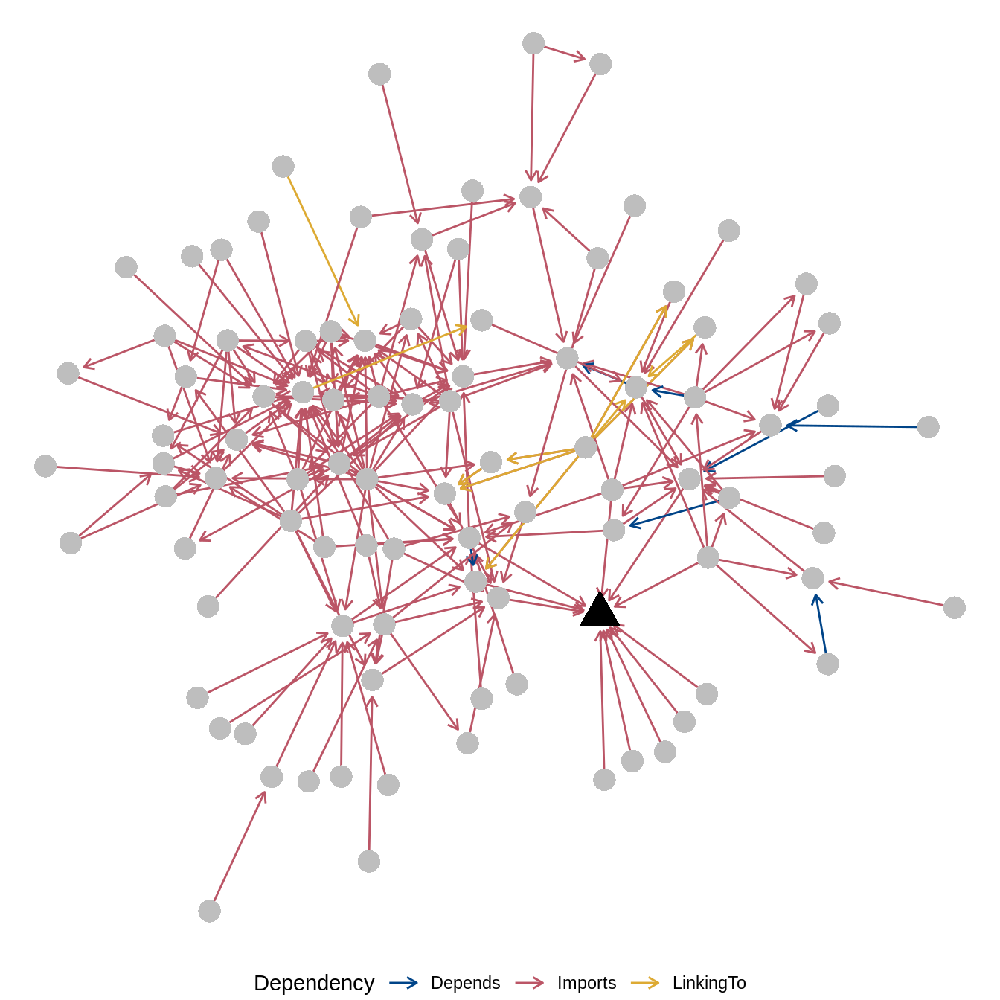

1 Prise en main
Maintenant que nous avons établi les motivations principales justifiant l’apprentissage de R et son usage en archéologie, il est temps d’introduire certains termes et concepts clés qui apparaissent fréquemment dans ce livre. Se familiariser avec ces termes vous aidera à trouver votre chemin lorsque vous commencerez à utiliser R.
Jusque là, nous avons utilisé le mot code sans vraiment le définir. Le code désigne tout ce qui est écrit dans un langage de programmation, d’un simple mot à une fonction de plusieurs milliers de lignes. Un script est un fichier qui contient du code, les noms de fichiers de scripts R se terminent par l’extension .R. Vous pouvez ouvrir ces fichiers avec n’importe quel éditeur de texte.
Le code contient souvent des commentaires, que vous pouvez reconnaître dans le langage R par un symbole # (dièse) en début de ligne. Le symbole # indique à l’interpréteur R d’ignorer tout ce qui se trouve à droite de ce symbole et de passer à la ligne de code suivante. Il n’y a pas de règles strictes sur le nombre de commentaires que vous devez inclure dans votre code, mais un bon point de départ serait une ligne de commentaire pour chaque 10 lignes ou section majeure de code. Les commentaires de code sont importants car ils vous aident, ainsi que d’autres personnes, à comprendre l’objectif du code. Les commentaires doivent expliquer le pourquoi, et non le comment (il suffit de lire le script pour cela) de votre code : ils doivent expliquer l’intention générale du code. Plus généralement, vos commentaires doivent vous dire ce que vous devrez savoir dans quelques semaines ou mois, lorsque vous reprendrez le travail après une pause et que vous ne vous souviendrez plus des détails.
1.1 Invite de commande
R se présente sous la forme d’une interface en ligne de commande, permettant de donner des instructions à l’ordinateur. Dans RStudio, cette interface est accessible dans l’onglet Console.
Lorsque R est en cours d’exécution, l’interface signifie qu’elle est prête à recevoir des instructions par une invite de commande (prompt) indiquée par un chevron >.
Il est alors possible d’entrer une expression, qui va être évaluée par R avant d’en retourner le résultat :
1 + 1
#> [1] 2Sans surprise, le résultat de l’addition est 2. R donne une information supplémentaire, le [1] devant 2 précise qu’il s’agit du premier (dans le cas présent, du seul) élément retourné. Certaines commandes peuvent retourner plusieurs valeurs. Par exemple, l’opérateur : (deux-points) permet de construire des séquences de nombres entiers :
0:100
#> [1] 0 1 2 3 4 5 6 7 8 9 10 11 12 13 14 15
#> [17] 16 17 18 19 20 21 22 23 24 25 26 27 28 29 30 31
#> [33] 32 33 34 35 36 37 38 39 40 41 42 43 44 45 46 47
#> [49] 48 49 50 51 52 53 54 55 56 57 58 59 60 61 62 63
#> [65] 64 65 66 67 68 69 70 71 72 73 74 75 76 77 78 79
#> [81] 80 81 82 83 84 85 86 87 88 89 90 91 92 93 94 95
#> [97] 96 97 98 99 100La commande 0:100 retourne 101 valeurs qui sont affichées sur plusieurs lignes : le nombre entre crochet indique l’indice de la valeur par laquelle débute chacune des lignes (la deuxième ligne commence par la 17e valeur, etc.).
Contrairement à Python, dans R les indices commencent à 1 et non à 0.
Si une commande incomplète est transmise, l’invite de commande signale par un + que la suite des instructions peut être saisie sur plusieurs lignes :
1 -
1
#> [1] 0Il est possible d’interrompre la saisie ou d’annuler une commande avec ctrl/cmd + c.
Si une commande erronée est transmise, R s’interrompt et retourne un message d’erreur (plus ou moins explicite) :
x
#> Error in eval(expr, envir, enclos): objet 'x' introuvableIl est possible de naviguer dans l’historique des commandes précédemment exécutées à l’aide des flèches haut et bas du clavier.
1.2 Objets
Il est possible d’associer un nom à une valeur et ainsi de créer des variables (au sens informatique) qui peuvent ensuite être appelées dans l’invite de commande. Une variables n’est rien d’autre qu’un emplacement de la mémoire de l’ordinateur, réservé pour stocker une valeur.
Cette affectation (ou assignation, par anglicisme) est réalisée à l’aide de l’opérateur <- (flèche) :
x <- 1 # Le résultat d'une affection n'est pas affiché dans la console
(x <- 1) # Avec des parenthèses, le résultat est affiché dans la console
#> [1] 1
x
#> [1] 1Il est possible de copier une variable :
y <- x
y
#> [1] 1Une fois copié, il n’existe aucun lien entre l’objet initial et sa copie. Dans l’exemple précédent, si x est modifié après avoir été copié dans y, la valeur de y ne sera pas modifiée.
Il est possible d’affecter plusieurs variables en même temps :
i <- j <- 1Les variables ainsi crées peuvent être réutilisées :
x + 1
#> [1] 2
i + j
#> [1] 2La réutilisation d’un nom de variable existant entraîne le remplacement de la valeur précédente (sans avertissement) :
i <- 1
i
#> [1] 1
i <- 2
i
#> [1] 2- Un nom de variable peut uniquement être composé de lettres, de chiffres et des caractères
.ou_. - Un nom de variable doit toujours commencer par une lettre (ou par un point suivi d’une lettre).
- Les noms de variables sont sensibles à la casse (
xetXsont deux variables différentes). - Il existe des mots réservés qui ne peuvent être utilisés comme nom de variable.
Dans R les variables stockent des objets57. Ainsi, le code x <- 1 peut se lire “créer un objet nommé x dont la valeur est 1”58.
Un objet possède un type et une structure de données particulière. Le type d’un objet est lié au type d’information qu’il contient et à la façon dont il est stocké dans la mémoire59. La structure de données d’un objet correspond à la manière dont sont organisées les données.
Ainsi, pour conserver les résultats d’un calcul, nous affectons la sortie d’une instruction à une variable. Ce processus d’affectation enregistre la sortie dans notre environnement afin qu’elle soit disponible pour une réutilisation ultérieure dans notre session. L’affectation n’enregistre pas les données dans un fichier qui peut être utilisé ailleurs : l’export de données est un processus distinct que nous aborderons plus tard.
1.4 Fonctions
Il existe des objets particuliers, qui permettent d’agir sur d’autres objets : les fonctions. Une fonction désigne un bloc de code qui exécute des instructions pour effectuer une tâche précise. Par exemple, la fonction mean() permet de calculer la moyenne d’un ensemble de nombres. Dans ce livre, vous serez toujours en mesure de reconnaître une fonction car elle sera toujours suivie d’une paire de parenthèses, avec souvent du code entre les parenthèses. Une fonction est un moyen efficace d’organiser le code, car une seule fonction peut entraîner l’exécution de centaines de lignes de code pour produire un résultat. Plutôt que d’exécuter ces centaines de lignes, une par une, encore et encore, nous pouvons simplement taper le nom de la fonction qui les invoque et nous épargner beaucoup de saisies. Minimiser la saisie est une bonne chose : cela permet de gagner du temps et de réduire les risques d’erreurs en faisant des fautes de frappe.
Les fonctions peuvent accepter une ou plusieurs valeurs (ou objets) en entrée, appelés arguments, et retournent un objet au terme de leur exécution. Les arguments permettent de modifier le comportement d’une fonction.
R fournit de très nombreuses fonctions, mais pour réaliser des taches très spécifiques il est possible d’écrire ses propres fonctions ou d’installer des packages supplémentaires.
Par exemple, la fonction round() permet d’arrondir une valeur numérique au nombre de décimales spécifié. Par défaut, la fonction round() réalise un arrondi à zéro chiffre après la virgule :
round(3.141593)
#> [1] 3La fonction args() permet de connaitre les différents arguments d’une fonction et les valeurs par défaut qui peuvent leur être associées :
args(round)
#> function (x, digits = 0)
#> NULLLa fonction round() accepte ainsi deux arguments, la valeur à arrondir et le nombre de décimales à conserver (0 par défaut).
Les arguments qui possèdent une valeur par défaut sont des arguments facultatifs : ils peuvent être omis lorsque la fonction est appelée (la valeur par défaut sera utilisée). À l’inverse, les arguments sans valeurs par défaut doivent être spécifiés : ce sont des arguments obligatoires.
Les différents arguments d’une fonction sont séparés par une virgule et sont nommés. Lors de l’appel d’une fonction, si les arguments ne sont pas spécifiés par leur nom, R va associer les valeurs correspondantes dans l’ordre. Dans l’exemple suivant, la valeur 2 est associée au second argument (digits) :
round(3.141593, 2)
#> [1] 3.14Pour éviter les erreurs et pour faciliter la lecture du code, dans un appel de fonction, spécifiez toujours les arguments par leur nom (à l’exception du premier argument). Les arguments obligatoires doivent être placés en premier, suivis des arguments facultatifs :
round(3.141593, digits = 2)
#> [1] 3.14Le nom des arguments d’une fonction, leurs rôles et leurs éventuelles valeurs par défaut sont détaillés dans l’aide.
Par exemple, on peut vouloir calculer la moyenne des longueurs d’un assemblage d’artefacts. Cet exemple montre l’utilisation de deux fonctions simples pour calculer une valeur moyenne :
x <- c(4, 7, 12) # Combine la longueur de trois artefacts
y <- mean(x) # Calcule la longueur moyenneLa fonction c() permet de combiner (“c” pour combiner) nos mesures d’artefacts dans un objet appelé vecteur. Un vecteur est une séquence simple d’éléments du même type. Dans notre exemple, tous les éléments sont des nombres. Il existe deux autres vecteurs couramment utilisés dans R : un vecteur de chaînes de caractères où tous les éléments peuvent être des lettres ou des mots, et un vecteur logique où tous les éléments sont des constantes logiques, soit TRUE (vrai) ou FALSE (faux). Le vecteur est un type de données fondamental en R que nous utiliserons très souvent. Dans l’exemple ci-dessus, nous avons stocké le résultat de la fonction c() dans un objet que nous appelons x (nous pouvons l’appeler comme bon nous semble, et nous n’avons pas besoin de créer x à l’avance). La deuxième ligne de code permet de calculer la moyenne de 4, 7 et 12 (c’est-à-dire \((4 + 7 + 12)/3\)), puis d’affecter, ou stocker, le résultat dans un objet appelé y. Nous pouvons ensuite utiliser x et y plus tard dans notre flux de travail pour d’autres tâches. C’est utile car cela signifie que nous n’avons pas à recalculer la moyenne à plusieurs reprises.
Les fonctions, telles que c() et mean() dans l’exemple ci-dessus, sont au cœur du travail avec R, et expliquent en partie la grande polyvalence de R. Elles permettent de gagner beaucoup de temps en minimisant la saisie et le copier-coller, il est donc utile d’investir quelques efforts pour apprendre à utiliser les fonctions, et à écrire vos propres fonctions.
1.5 Packages
1.5.1 Installer et utiliser des packages
Les fonctions sont organisées en packages, que vous pouvez télécharger pour étendre l’utilisation de R. Lors d’une première installation de R, un ensemble de packages contenant les fonctions fondamentales est installé :
- Les packages essentiels :
base,compiler,datasets,graphics,grDevices,grid,methods,parallel,splines,stats,stats4,tcltk,tools,translations,utils. - Les packages recommandés :
boot,class,cluster,codetools,foreign,KernSmooth,lattice,MASS,Matrix,mgcv,nlme,nnet,rpart,spatial,survival.
L’installation d’un package permet de bénéficier de fonctionnalités supplémentaires, généralement dédiées à une tâche bien spécifique. Pour ne pas se perdre dans la multitude de ressources disponibles, le CRAN propose des répertoires de packages par domaine (Task Views) pour faciliter le choix des packages pour une analyse spécifique. Il existe ainsi des répertoires pour les sciences sociales, l’analyse de données environnementales ou encore l’analyse de données spatiales. Pour l’archéologie, il existe une Task View non officielle, maintenue par Ben Marwick.
Lorsqu’un package est disponible sur le CRAN, il peut aisément être installé à l’aide de la fonction install.packages()60. Par exemple, si vous exécutez install.packages("binford"), vous allez télécharger automatiquement le package binford depuis le CRAN (vous devez être connecté à Internet) et l’installer dans votre bibliothèque. Le package binford contient les données de son livre de Constructing Frames of Reference : An Analytical Method for Archaeological Theory Building Using Ethnographic and Environmental Data Sets (2001).
Essayez vous-même en exécutant les commandes suivantes pour installer certains des packages que nous utiliserons dans les chapitres suivants. Vous ne devez utiliser install.packages() qu’une seule fois (par ordinateur et par utilisateur) : vous n’avez pas besoin de le faire à chaque nouvelle session de travail. Remarquez comment nous utilisons la fonction c() ici pour créer un vecteur de noms de packages (chaînes de caractères) sur lequel la fonction install.packages() peut travailler :
# Installer un seul package
install.packages("folio")
# Installer plusieurs packages à la fois
pkg <- c("dplyr", "ggplot2", "knitr", "readr", "rmarkdown", "scales", "stringr", "tidyr")
install.packages(pkg)La plupart des packages publiés sur le CRAN font l’objet de mises à jour régulières. Pour maintenir à jour les packages installés sur votre ordinateur, la fonction old.packages() permet de lister les packages pour lesquels il existe une nouvelle version et update.packages() permet de télécharger et d’installer les nouvelles versions.
Installer un nouveau package est une condition nécessaire, mais pas suffisante, pour pouvoir l’utiliser. Au lancement, R ne charge pas tous les packages installés, mais uniquement les packages de base61. Dans l’exemple suivant, si on utilise la fonction data() pour charger le jeux de données intcal20 du package folio sans que ce dernier soit chargé. R ne sait pas où chercher l’objet et retourne un avertissement :
data(intcal20)
#> Warning in data(intcal20): jeu de données 'intcal20' introuvableLorsque R installe un package, il le télécharge dans votre bibliothèque. Vous devez utiliser la fonction library() pour mettre le contenu du package à la disposition de votre session R actuelle. Chaque fois que vous lancez R, vous devrez exécuter library() pour utiliser les fonctions des package que vous avez précédemment installés. Une bonne pratique consiste à placer les appels à la fonctions library() parmi les premières lignes de votre script, afin que les autres utilisateurs puissent rapidement voir quels paquets ils devront avoir pour exécuter votre code.
Il est ainsi nécessaire de charger un package à l’aide de la fonction library() avant de pouvoir l’utiliser62 :
L’une des forces de R, la communauté dynamique de chercheurs-développeurs, est aussi l’une de ses faiblesses. En effet, cela signifie que certains packages sont mis à jour fréquemment, et d’autres non. Parfois, ces mises à jour peuvent modifier le fonctionnement de votre code, ou l’empêcher complètement de fonctionner. Nous aborderons des solutions détaillées à ce problème par la suite. Pour l’instant, nous noterons simplement que c’est une bonne pratique d’inclure la sortie de sessionInfo() dans les résultats de votre analyse, car elle vous indique les numéros de version spécifiques de tous les paquets utilisés. Cela signifie que s’il y a des changements drastiques dans certains des packages que vous utilisez au cours de la vie de votre projet, vous avez un enregistrement de la dernière version des packages qui a fonctionné pour vous.
1.5.2 Limiter les dépendances
Si les packages de base de R offrent de nombreuses possibilités, il est courant d’avoir besoin de fonctionnalités supplémentaires au cours d’une étude. Pour une analyse spécifique, il est très probable qu’il existe déjà un ou plusieurs packages offrant les fonctionnalités recherchées et installable depuis le CRAN. Cette offre pléthorique a cependant un revers : à chaque package supplémentaire utilisé dans votre projet, vous augmentez le risque de voir apparaître des problèmes liés à ces dépendances63.
Par exemple, FactoMineR est sans doute le package le plus utilisé pour l’analyse de données multivariées. FactoMineR possède 15 dépendances directes : d’autres packages dont il utilise les fonctionnalités. Cependant, chacune de ces dépendances est susceptible d’avoir elle même des dépendances, et ainsi de suite, si bien que FactoMineR a en réalité une longue chaîne de 104 (!) dépendances (fig. 1.1).

Figure 1.1: Réseau des dépendances du package FactoMineR (hors packages de base). Les noms des packages ont été omis pour faciliter la lecture (FactoMineR est représenté par un triangle noir, les autres packages sont représentés par des points gris).
Qu’arrivera-t-il alors si une seule des ces dépendances change drastiquement, arrête de fonctionner ou disparaît tout simplement (fig. 1.2) ? Pour réduire ce risque et sortir de cet enfer des dépendances :
- Évitez d’utiliser un package particulier quand la même tâche peut être réalisée en R basique (écrivez vos propres fonctions !).
- Quand cela est possible, préférez les packages qui n’ont pas (ou peu) de dépendances.
- N’utilisez pas la version de développement d’un package, mais installez toujours la version stable depuis le CRAN.

Figure 1.2: Dependency. “Someday ImageMagick will finally break for good and we’ll have a long period of scrambling as we try to reassemble civilization from the rubble.”.64
Le tableau n’est cependant pas totalement noir. Les packages publiés sur le CRAN doivent se conformer à des règles strictes et sont continuellement testés dans différentes configurations (systèmes d’exploitation et versions de R), obligeant les développeurs à réagir rapidement lorsqu’un bug est observé. De plus, lorsqu’un package n’est plus disponible sur le CRAN, les versions antérieures sont archivées et restent disponibles au téléchargement. Enfin, des initiatives comme rOpenSci œuvrent pour garantir un écosystème fonctionnel, en favorisant l’évaluation et la maintenance des packages.
1.6 Obtenir de l’aide
1.6.1 Utiliser la documentation
La maîtrise d’une langue étrangère comme l’allemand ou le chinois demande du temps, de la pratique et des hauts et des bas. L’apprentissage d’un langage de programmation comme R est un processus similaire, et vous devez vous attendre à des hauts et des bas à mesure que R devient un élément de plus en plus central de votre flux de travail. R est fourni avec une documentation intégrée très complète, très structurée et contenant très souvent des exemples de code que vous pouvez exécuter pour explorer le fonctionnement d’une fonction.
Lorsque vous ne savez pas comment utiliser une fonction particulière (difficile de mémoriser les 1184 fonctions des packages de base), votre premier réflexe doit être de consulter la documentation. La documentation couvre l’ensemble des fonctions, jeux de données et autres objets présents dans les différents packages.
Pour un objet donné, on peut consulter la documentation associée en utilisant soit la fonction help(), soit l’opérateur ?. Par exemple, pour accéder à l’aide de la fonction round() :
help(round)
?roundSi l’objet recherché appartient à un package qui n’est pas chargé, R ne saura pas où chercher la documentation. Dans l’exemple suivant, la fonction lda() appartient au package MASS qui n’est pas chargé :
help(lda)Pour accéder à la documentation, il faudra alors charger le package au préalable ou le spécifier dans la fonction help() :
help(lda, package = "MASS")Si on ignore le nom de la fonction à utiliser, deux approches permettent d’explorer la documentation :
- On peut parcourir la documentation d’un package particulier, dont on sait qu’il doit contenir la fonction recherchée (par exemple,
help(package = "MASS")permet d’afficher le sommaire de la documentation du package MASS). - On peut rechercher dans l’aide par mot-clé à l’aide de l’opérateur
??ou de la fonctionhelp.search().
Par exemple, pour chercher toutes les pages de la documentation contenant le terme “correlation”65 :
help.search("correlation")
??correlationToutes les pages d’aide sont structurées de la même façon. Généralement, on y trouve au moins les sections suivantes :
- Description
- Une courte description de ce que fait la fonction.
- Usage
- Un exemple d’utilisation de la fonction présentant l’ensemble des arguments et leurs éventuelles valeurs par défaut.
- Arguments
- La liste des arguments de la fonction précisant leur nom, leur rôle et la valeur ou le type d’objet qui est attendu.
- Details
- Une explication détaillée du comportement de la fonction.
- Value
- Une description de ce qui est retourné lorsque la fonction est exécutée.
- References
- Les références bibliographiques associées à la fonction.
- See Also
- Une suggestion de fonctions similaires.
- Examples
- Quelques exemples illustrant différents cas d’utilisation de la fonction. Ces exemples peuvent être exécutés directement avec la fonction
example().
Pour exécuter les exemples illustrant la documentation de la fonction mean() :
example(mean)
#>
#> mean> x <- c(0:10, 50)
#>
#> mean> xm <- mean(x)
#>
#> mean> c(xm, mean(x, trim = 0.10))
#> [1] 8.75 5.50Si vous faites face à une difficulté, il fort probable quelqu’un se soit déjà posé la même question que vous et que la réponse se trouve sur Stack Overflow ou sur les listes de diffusions R-help et R-devel (actives depuis 1996). Dans le cas contraire, vous pourrez y exposer votre problème, mais il vous faudra apprendre à écrire des exemples reproductibles.
1.6.2 Écrire des exemples reproductibles
Si vous souhaitez obtenir de l’aide en ligne auprès de la communauté des utilisateurs de R, sur Stack Overflow66 ou sur les listes de diffusion, la seule description de votre difficulté ne sera pas suffisante. Vous devez permettre aux autres de reproduire le problème sur leur machine pour qu’ils puissent vous proposer une solution. Pour cela, inutile de diffuser l’intégralité de votre code et de vos données, préparez un exemple qui soit :
- Minimal : utilisez le moins de code possible tout en produisant le même problème.
- Complet : fournissez tous les éléments (version de R, packages utilisés, etc.) dont un tiers a besoin pour reproduire votre problème. Utilisez les données d’exemple de R.
- Reproductible : le code que vous vous apprêtez à fournir doit reproduire le problème.
Ces trois aspects sont détaillés dans l’aide de Stack Overflow, il existe également une question dédié à l’écriture d’un exemple reproductible (reprex) avec R.
Comme le souligne Wickham67, la plupart du temps, l’écriture d’un exemple reproductible vous permettra d’identifier et de résoudre vous-même le problème.